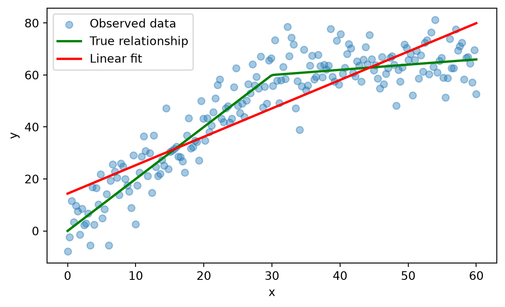
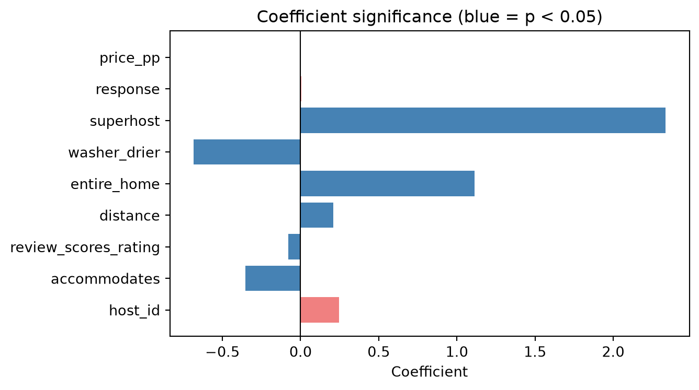
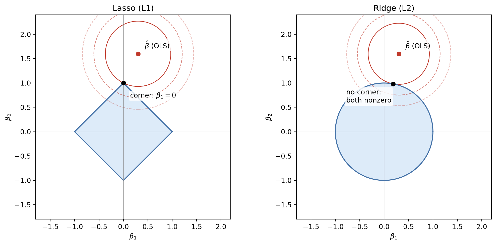
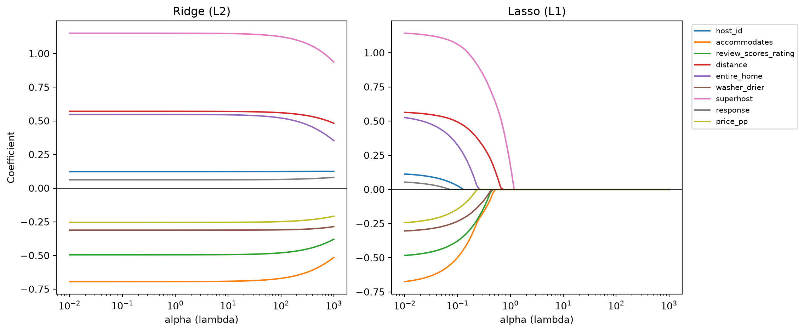
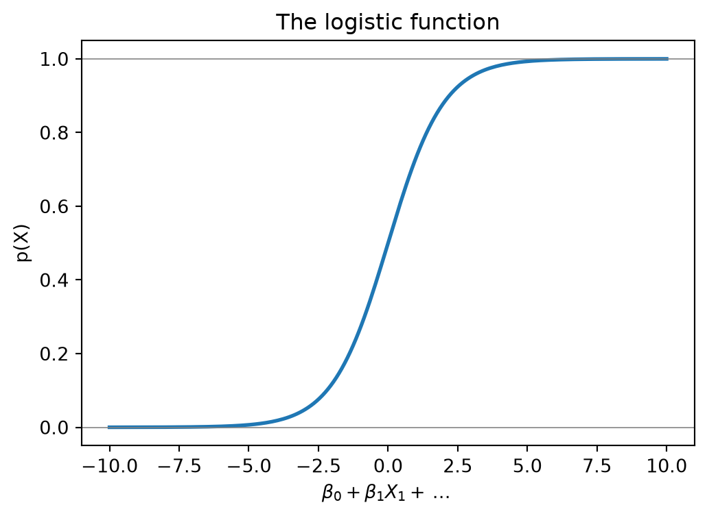
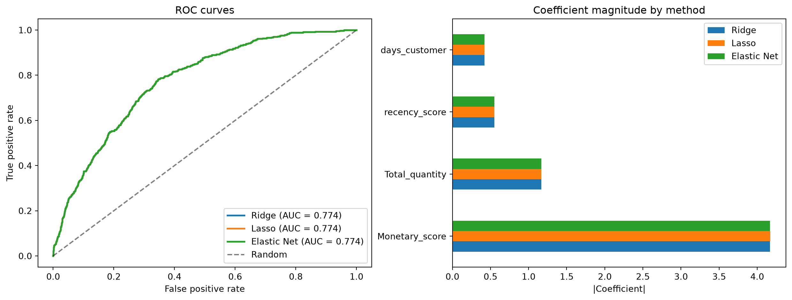

import pandas as pd
import numpy as np
import matplotlib.pyplot as plt
RANDOM_STATE = 1237 Modeling
The previous chapter treated the models producing predictions, a random forest and a KNN classifier, as black boxes: useful for generating scores to evaluate, not yet fully explained. This chapter introduces the two workhorses of predictive modeling instead: linear regression for a quantitative response, and logistic regression for a qualitative (typically binary) one. Both are parametric techniques: they assume a specific functional form for the relationship between predictors and response up front, which is what makes them fast to fit and, unlike a random forest, directly interpretable. That interpretability is also why, despite decades of newer alternatives, they remain the workhorse models in many business settings such as credit scoring and churn management, where a model’s predictions often have to be explained to a regulator, a manager, or a customer, not just be accurate (Lessmann et al. 2015; Crook et al. 2007).
7.1 Linear Regression
Linear regression predicts a quantitative response, a number rather than a category: next month’s sales, a customer’s lifetime value, the price of a house, stock prices, or, in the professor’s own published research, the number of friends a person has on a social network, predicted from their activity on the platform (Ballings et al. 2016). It is a parametric technique: it assumes the response \(Y\) is a straight-line (linear) function of the predictors \(X\), plus some irreducible noise \(\varepsilon\):
\[ Y = \beta_0 + \beta_1 X_1 + \beta_2 X_2 + \cdots + \beta_p X_p + \varepsilon \]
With one predictor (\(p = 1\)) this is simple linear regression, a straight line through a scatterplot. With more than one, it’s multiple linear regression, and the same equation now describes a plane (two predictors) or a hyperplane (more than two), but the intuition doesn’t change. Two things are being estimated, and both have a direct, plain-language reading:
- The intercept, \(\beta_0\), is the model’s prediction when every predictor equals zero: the baseline the rest of the model adjusts up or down from. It’s not always meaningful on its own, a customer with zero transactions and zero recency may not exist in practice, but it’s still needed to place the line (or plane) correctly.
- Each slope, \(\beta_j\), is the change in \(Y\) for a one-unit increase in \(X_j\), holding every other predictor fixed. This “holding everything else fixed” part matters: it is the coefficient’s own, isolated effect, not the raw correlation you’d see from that predictor alone.
7.1.1 When the linear assumption fails
Because linear regression commits to a straight line, it struggles whenever the true relationship bends. The example below is synthetic on purpose, so we know the true relationship: it grows steeply up to a point, then flattens out, a common shape for e.g. diminishing returns on an advertising budget.
rng = np.random.default_rng(RANDOM_STATE)
x = np.linspace(0, 60, 200)
y_true = np.where(x < 30, 2 * x, 60 + 0.2 * (x - 30))
y = y_true + rng.normal(0, 8, size=len(x))from sklearn.linear_model import LinearRegression
lin_reg = LinearRegression().fit(x.reshape(-1, 1), y)
y_pred = lin_reg.predict(x.reshape(-1, 1))
print(f"Intercept: {lin_reg.intercept_:.2f}")
print(f"Slope: {lin_reg.coef_[0]:.2f}")Intercept: 14.36
Slope: 1.09plt.figure(figsize=(7, 4))
plt.scatter(x, y, alpha=0.4, label="Observed data")
plt.plot(x, y_true, color="green", linewidth=2, label="True relationship")
plt.plot(x, y_pred, color="red", linewidth=2, label="Linear fit")
plt.xlabel("x")
plt.ylabel("y")
plt.legend()
plt.show()
The fitted line, with an intercept around 14 and a slope around 1.1, is a compromise: a single slope has to average the true, steeper early growth rate (2 per unit of \(x\)) against the flatter later one (0.2 per unit), so it ends up too steep for the flat part and too flat for the steep part. On average the error is not catastrophic, but the model systematically misses both ends of the range. Even so, linear regression remains a reasonable first model to try in practice: it is cheap to fit, easy to explain to a non-technical audience, and, as this example shows, “wrong” does not always mean “useless”. As covered in the previous chapter, interaction terms and polynomial features let a linear model absorb some of this curvature without abandoning the linear framework entirely.
7.1.2 Fitting the line: sklearn versus statsmodels
Fitting a line means choosing the intercept and slope that make the line pass as close as possible to the data points, in the sense of minimizing the residual sum of squares (RSS), the sum of the squared vertical distances between each observed point and the line:
\[ \text{RSS} = \sum_{i=1}^n \left(y_i - \hat{y}_i\right)^2 \]
sklearn’s LinearRegression and the traditional statistical technique Ordinary Least Squares (OLS) both minimize exactly this quantity and will always produce identical coefficients. Where they differ is in what they report back:
import statsmodels.api as sm
X_const = sm.add_constant(x)
ols_model = sm.OLS(y, X_const).fit()
print(f"sklearn: intercept = {lin_reg.intercept_:.4f}, slope = {lin_reg.coef_[0]:.4f}")
print(f"statsmodels: intercept = {ols_model.params[0]:.4f}, slope = {ols_model.params[1]:.4f}")sklearn: intercept = 14.3557, slope = 1.0932
statsmodels: intercept = 14.3557, slope = 1.0932The coefficients match exactly. statsmodels, however, also gives you the full statistical picture: standard errors, \(t\)-statistics, and p-values for every coefficient, along with \(R^2\) for the whole model.
print(ols_model.summary()) OLS Regression Results
==============================================================================
Dep. Variable: y R-squared: 0.758
Model: OLS Adj. R-squared: 0.757
Method: Least Squares F-statistic: 619.7
Date: Tue, 22 Sep 2026 Prob (F-statistic): 6.82e-63
Time: 10:52:04 Log-Likelihood: -758.88
No. Observations: 200 AIC: 1522.
Df Residuals: 198 BIC: 1528.
Df Model: 1
Covariance Type: nonrobust
==============================================================================
coef std err t P>|t| [0.025 0.975]
------------------------------------------------------------------------------
const 14.3557 1.523 9.425 0.000 11.352 17.359
x1 1.0932 0.044 24.894 0.000 1.007 1.180
==============================================================================
Omnibus: 0.007 Durbin-Watson: 0.904
Prob(Omnibus): 0.997 Jarque-Bera (JB): 0.069
Skew: 0.012 Prob(JB): 0.966
Kurtosis: 2.912 Cond. No. 69.2
==============================================================================
Notes:
[1] Standard Errors assume that the covariance matrix of the errors is correctly specified.Two things in this particular table are worth reading concretely, not just knowing where to find. The slope’s p-value is essentially 0, so the relationship between \(x\) and \(y\) is real, not noise, which is unsurprising since we built the data ourselves. More interesting is \(R^2 = 0.758\): the line explains about 76% of the variance in \(y\), which on its own would read as a strong fit. It isn’t one, since we already know this exact model systematically misfits both ends of the range. A high \(R^2\) only tells you the predictors and the response move together strongly; it says nothing about whether a straight line is the right shape for that relationship. It is entirely possible to have a good \(R^2\) and a wrong functional form at the same time, exactly as shown above.
sklearn deliberately leaves all of this out. It is built for prediction, where the coefficients themselves are a means to an end, so it optimizes for speed and for working the same way across dozens of very different model types. statsmodels is built for inference, where the coefficients are the end, so it computes the extra statistics that let you ask “is this effect real, or could it just be noise?” Use sklearn when the goal is a prediction pipeline; reach for statsmodels whenever you need to defend a specific coefficient’s value.
7.1.3 A worked example: predicting Airbnb demand
Let’s apply this to a real dataset: predicting how many days per month (demand) an Airbnb listing gets booked, based on properties of the listing and its host.
airbnb = pd.read_csv("../data/processed/basetable_regression.csv")
airbnb = airbnb.drop(columns=["Unnamed: 0"])
print(f"Shape: {airbnb.shape}")
airbnb.isnull().sum()Shape: (6862, 10)host_id 0
accommodates 0
review_scores_rating 1292
distance 0
demand 0
entire_home 0
washer_drier 0
superhost 0
response 869
price_pp 0
dtype: int64Two columns have missing values, review_scores_rating and response, so the pipeline built below needs an imputation step. One predictor, host_id, is not a real feature at all, it is just an identifier, and is deliberately kept in the basetable as a check: a well-behaved variable selection method should be able to recognize it carries no signal and downweight or drop it.
from sklearn.model_selection import train_test_split
X = airbnb.drop(columns=["demand"])
y = airbnb["demand"]
X_train, X_test, y_train, y_test = train_test_split(
X, y, test_size=0.3, random_state=RANDOM_STATE
)
print(f"Training set: {X_train.shape[0]} rows, test set: {X_test.shape[0]} rows")Training set: 4803 rows, test set: 2059 rowsAs with any model, missing values need to be handled before fitting. Rather than imputing by hand as in earlier chapters, we wrap the imputer and the model together in a single Pipeline. That guarantees the exact same imputation logic (fit only on the training data) is applied consistently to both the training and the test set, and it lets the whole thing be treated, fit, and reused as one object.
from sklearn.pipeline import Pipeline
from sklearn.impute import SimpleImputer
from sklearn.metrics import mean_squared_error, r2_score
lr_pipeline = Pipeline([
("imputer", SimpleImputer(strategy="median")),
("regressor", LinearRegression()),
])
lr_pipeline.fit(X_train, y_train)
y_pred = lr_pipeline.predict(X_test)
test_rmse = np.sqrt(mean_squared_error(y_test, y_pred))
test_r2 = r2_score(y_test, y_pred)
baseline_rmse = np.sqrt(mean_squared_error(y_test, np.full_like(y_test, y_train.mean(), dtype=float)))
print(f"Test RMSE: {test_rmse:.3f} days")
print(f"Baseline RMSE: {baseline_rmse:.3f} days (always predicting the training mean)")
print(f"Test R²: {test_r2:.3f}")Test RMSE: 5.482 days
Baseline RMSE: 5.659 days (always predicting the training mean)
Test R²: 0.061RMSE on its own is hard to judge: is 5 days good or bad? It depends entirely on the scale of the target. The baseline above answers that: predicting nothing but the training set’s average demand for every listing is the simplest model imaginable, so any model worth using has to beat it. The gap between the two numbers is the actual value the model adds, and here that gap is narrow: the model only edges out the baseline by a small margin.
The \(R^2\) tells the same story from a different angle. At around 0.06, the model explains only about 6% of the variance in demand, which sounds discouraging next to the OLS demo’s \(R^2\) of 0.758 above. That comparison isn’t quite fair, though: the synthetic demo used a single predictor built to have a strong, direct relationship with \(y\) by construction, while booking demand for a real listing depends heavily on things this basetable simply doesn’t capture, seasonality, location beyond a single distance measure, competing listings nearby, price relative to the market, and plain randomness in traveller behaviour. A low \(R^2\) here isn’t a sign the model was fit badly; it’s a sign that host and listing attributes alone are a genuinely weak predictor of demand, which is itself a useful finding to report back to a business stakeholder who might have expected more.
feature_names = X_train.columns
lr_model = lr_pipeline.named_steps["regressor"]
coef_df = pd.concat([
pd.DataFrame({"Feature": ["Intercept"], "Coefficient": [lr_model.intercept_]}),
pd.DataFrame({"Feature": feature_names, "Coefficient": lr_model.coef_}),
])
coef_df| Feature | Coefficient | |
|---|---|---|
| 0 | Intercept | 11.068960 |
| 0 | host_id | 0.244975 |
| 1 | accommodates | -0.352595 |
| 2 | review_scores_rating | -0.079644 |
| 3 | distance | 0.210747 |
| 4 | entire_home | 1.113333 |
| 5 | washer_drier | -0.684775 |
| 6 | superhost | 2.336448 |
| 7 | response | 0.006102 |
| 8 | price_pp | -0.002349 |
The intercept is the model’s predicted demand when every feature equals zero, the baseline that every slope below then adjusts. Since a real listing with zero accommodates and zero distance doesn’t exist, that exact baseline is a mathematical anchor for the line rather than a prediction you’d ever actually use on its own, but it is still required to place the fitted plane correctly.
The slopes are read one at a time, holding everything else in the model fixed. For example, a positive coefficient on superhost means that, for two otherwise identical listings, being a superhost is associated with more booked days per month, on top of whatever the intercept already accounts for. This is what makes linear regression attractive to a business audience: every number in the table above is a direct, additive statement about the outcome, with no translation required.
Not every coefficient in that table is trustworthy, though. Some of these features may just be adding noise rather than signal, exactly what host_id was included to test for. To find out which, we need the p-values sklearn doesn’t give us:
X_train_imputed = lr_pipeline.named_steps["imputer"].transform(X_train)
X_train_with_const = sm.add_constant(X_train_imputed)
ols_airbnb = sm.OLS(y_train.values, X_train_with_const).fit()
coef_stats = pd.DataFrame({
"Feature": feature_names,
"Coefficient": ols_airbnb.params[1:],
"P_value": ols_airbnb.pvalues[1:],
})
coef_stats["Significant"] = coef_stats["P_value"] < 0.05
coef_stats.sort_values("P_value")| Feature | Coefficient | P_value | Significant | |
|---|---|---|---|---|
| 6 | superhost | 2.336448 | 1.580566e-42 | True |
| 1 | accommodates | -0.352595 | 6.628124e-15 | True |
| 3 | distance | 0.210747 | 3.795619e-12 | True |
| 4 | entire_home | 1.113333 | 8.311393e-10 | True |
| 2 | review_scores_rating | -0.079644 | 1.030395e-09 | True |
| 5 | washer_drier | -0.684775 | 1.139220e-04 | True |
| 8 | price_pp | -0.002349 | 1.643469e-03 | True |
| 0 | host_id | 0.244975 | 1.284363e-01 | False |
| 7 | response | 0.006102 | 4.401556e-01 | False |
plt.figure(figsize=(7, 4))
colors = coef_stats["Significant"].map({True: "steelblue", False: "lightcoral"})
plt.barh(coef_stats["Feature"], coef_stats["Coefficient"], color=colors)
plt.axvline(0, color="black", linewidth=0.8)
plt.xlabel("Coefficient")
plt.title("Coefficient significance (blue = p < 0.05)")
plt.tight_layout()
plt.show()
host_id and response come back not significant, host_id exactly as expected, since it’s an identifier with no real relationship to demand, and response more usefully: a host’s response rate looks like it should matter, but it doesn’t move the needle once the other predictors are already in the model. Both are still sitting in the model above, quietly adding complexity without adding predictive power. washer_drier, on the other hand, is significant despite looking like a minor amenity, a reminder that statistical significance depends on the actual data, not on how important a feature sounds. The next section covers how to find and remove the genuinely uninformative ones, rather than by eye or an arbitrary p-value threshold.
NoteModel comparison beyond a single test set
Comparing candidate linear models does not always require a held-out test set. Statistics offers two broad routes (James et al. 2013): directly estimating the test error via cross-validation (covered in the previous chapter, and the more broadly correct approach), or approximating it by adjusting the training error for the number of predictors used, via measures like adjusted \(R^2\), AIC, or BIC. These metrics add a penalty for the number of predictors used, helping to prevent overfitting and app roximate the true test error. The second route is popular in classical statistics, mainly because it doesn’t require setting aside data you might not have much of, but cross-validation is generally preferred whenever enough data is available for it.
7.1.4 Where linear regression breaks down
Linear regression rests on a handful of assumptions about the data that real datasets routinely violate to some degree:
- Nonlinearity: the true relationship isn’t actually a straight line, as in the first example of this chapter.
- Correlated errors: residuals aren’t independent of each other, common in time series data, where an unusually large error today makes an unusually large error tomorrow more likely.
- Heteroscedasticity: the spread of the residuals changes across the range of the predictors, instead of staying roughly constant.
- Multicollinearity: two or more predictors are highly correlated with each other, which makes their individual coefficients unstable, sometimes even flipping sign between two very similar samples of the same data.
Diagnosing and correcting these properly is an econometrics topic, well beyond this book’s scope. The one thing worth carrying over into a predictive-modelling context is where the damage actually lands: these violations usually hurt a model’s raw predictive accuracy far less than you would expect, but they hurt the reliability of its coefficients much more. A coefficient’s size, and even its sign, can become unstable well before the model’s predictions do. This maps directly onto the sklearn-versus-statsmodels distinction from earlier: if the model is only ever used to produce a score, these assumption violations are a secondary concern, but the moment you tell a manager “increasing \(X\) by one unit changes \(Y\) by \(\beta\)”, it is worth checking whether that particular assumption actually holds.
7.2 Selecting Variables and Taming Complexity
The previous chapter’s variable selection section introduced three families of methods: filter methods, which score each predictor against the target independently of any model, wrapper methods, which retrain a model on different feature subsets and keep the best-performing one, and embedded methods, which build variable selection directly into how the model is fit. Filter methods were covered there; both of the remaining families belong here, since they only make sense once you have an actual model to wrap around or embed into.
7.2.1 Wrapper methods: sequential feature selection
The classical wrapper approach is stepwise selection: start from nothing and add the single best predictor at each step (forward selection), start from everything and remove the least useful one at each step (backward selection), or some combination of both. The trouble is what “best” and “least useful” get judged by: a p-value or an AIC score, re-tested again and again on the exact same training data, once per candidate variable at every single step.
That repeated testing against one fixed dataset is exactly what data dredging (also called p-hacking) means: the more hypotheses you test on the same data, the more likely you are to find one that exactly matches your preconceptions, not because it reflects a real pattern. A p-value of 0.05 already means a 1-in-20 false-positive rate on a single test; run dozens of these tests along the way, one per candidate predictor at every step, and finding a handful of “significant” variables that are really just noise stops being unlikely and starts being expected. This is why stepwise selection is unstable: run it again on a slightly different sample of the same population, and you will often get a different final set of variables, exactly what you’d expect if some of the original picks were random noise rather than genuine signal in the first place.
sklearn sidesteps this by never testing a candidate feature against the data it was chosen from. SequentialFeatureSelector is a modern equivalent that judges each candidate by cross-validated performance instead of a p-value: every decision is checked against held-out folds the feature had no part in, so a feature can only look good by actually improving out-of-sample predictions, not by getting lucky on the training data.
from sklearn.feature_selection import SequentialFeatureSelector
sfs_pipeline = Pipeline([
("imputer", SimpleImputer(strategy="median")),
("selector", SequentialFeatureSelector(
LinearRegression(), n_features_to_select=5, direction="forward",
scoring="neg_root_mean_squared_error", cv=5,
)),
("regressor", LinearRegression()),
])
sfs_pipeline.fit(X_train, y_train)
selected_sfs = feature_names[sfs_pipeline.named_steps["selector"].get_support()]
rmse_sfs = np.sqrt(mean_squared_error(y_test, sfs_pipeline.predict(X_test)))
print(f"Selected features: {list(selected_sfs)}")
print(f"Test RMSE: {rmse_sfs:.3f} days (full model: {test_rmse:.3f})")Selected features: ['accommodates', 'review_scores_rating', 'distance', 'entire_home', 'superhost']
Test RMSE: 5.497 days (full model: 5.482)Forward selection here means specifying up front how many features to keep, 5 above, which is both its main advantage (aggressive, deliberate feature reduction) and its main limitation (finding the right number still needs its own cross-validation loop, comparing several choices of n_features_to_select against each other). The RMSE with only 5 of the 9 features is essentially tied with the full model, so nothing of real value was lost by cutting the feature count almost in half.
Notice, that this cross-validated selection doesn’t fully match the p-value picture from before: it correctly drops host_id and response, the two genuinely non-significant features, but it also drops washer_drier and price_pp, which were statistically significant. That isn’t a contradiction, a coefficient can be significant on its own and still be redundant once combined with the other four features that already explain most of what it was picking up, which is exactly the kind of correlation-driven redundancy a p-value alone can’t detect.
7.2.2 Embedded methods: regularization
Regularization takes a different approach entirely: instead of removing predictors from the model, keep all of them, but add a penalty to the fitting procedure that discourages large coefficients. The model is constrained rather than reduced. This “shrinks” coefficients toward zero, which trades a little bias for a real reduction in variance, making the model more robust to noise and less sensitive to any one training sample (James et al. 2013; Kuhn and Johnson 2013). Two types of penalty are most common: Ridge (L2) regularization, which penalizes the sum of squared coefficients, and Lasso (L1) regularization, which penalizes the sum of absolute coefficients:
\[ \text{Ridge (L2): } \min_\beta \; \text{RSS} + \lambda \sum_{j=1}^p \beta_j^2 \qquad\qquad \text{Lasso (L1): } \min_\beta \; \text{RSS} + \lambda \sum_{j=1}^p |\beta_j| \]
The parameter \(\lambda\) controls how aggressively coefficients are penalized, and it is a direct lever on the bias-variance trade-off from the previous chapter: \(\lambda = 0\) recovers ordinary least squares (low bias, potentially high variance), while a very large \(\lambda\) shrinks every coefficient toward zero and eventually toward a model that predicts only the mean (high bias, low variance). The right value in between is found the same way any other hyperparameter is, via cross-validation.
The practical difference between the two penalties matters for interpretation. Ridge shrinks every coefficient but essentially never sets one to exactly zero, so all predictors stay in the model, just with smaller weights. Lasso can shrink a coefficient all the way to zero, which makes it a built-in variable selection method: whichever predictors survive are the ones the model considers worth keeping.
There is a simple geometric reason for that difference. Minimizing RSS plus a penalty is mathematically equivalent to minimizing RSS alone subject to a hard budget on the coefficients: a total absolute size for Lasso (a diamond-shaped region of allowed coefficient values) or a total squared size for Ridge (a circular region). The unconstrained least-squares solution \(\hat{\beta}\) usually sits outside that budget, so the regularized solution is whichever point is closest to it.

The red circles are contours of equal RSS, growing outward from \(\hat{\beta}\) as the fit gets worse. The regularized solution is wherever the smallest such contour first touches the shaded budget region. Because the diamond has corners sitting exactly on the axes, that first touch often lands on a corner, where one coefficient is exactly zero. The circle has no corners: its closest point is just some point on its boundary, essentially never exactly on an axis. That is the entire geometric reason Lasso performs variable selection and Ridge does not.
TipAlways scale before you regularize
Both penalties act directly on the coefficients’ magnitudes, and a coefficient’s magnitude depends on the scale of its predictor: a variable measured in the thousands only needs a tiny coefficient to have a meaningful effect on the outcome, while one measured in single digits needs a much larger coefficient for that same effect, regardless of how important either actually is. Left uncorrected, the penalty would fall almost entirely on the small-scale predictor: its naturally larger coefficient gets shrunk hard, while the large-scale predictor’s already-tiny coefficient barely feels the penalty at all, even if the two are equally important to the outcome.
The fix is exactly the standardization step from the previous chapter: scale every predictor before fitting a regularized model, fit the scaler on the training data only inside a pipeline, and apply it to the test data.
Below, Ridge and Lasso both get fit the exact same way: impute, scale, then search a grid of \(\lambda\) values (alpha in sklearn) with cross-validation to find the one that minimizes RMSE, and evaluate the winner on the held-out test set. Only the estimator and its hyperparameter grid change between the two, so rather than repeat that recipe twice, the cell below writes it once as a reusable helper function, fit_regularized. Right after defining it, we call it once for Ridge on the Airbnb data.
from sklearn.linear_model import Ridge, Lasso, ElasticNet
from sklearn.preprocessing import StandardScaler
from sklearn.model_selection import GridSearchCV
def fit_regularized(estimator, param_grid, X_train, y_train, X_test, y_test):
pipeline = Pipeline([
("imputer", SimpleImputer(strategy="median")),
("scaler", StandardScaler()),
("regressor", estimator),
])
grid = GridSearchCV(pipeline, param_grid, cv=5, scoring="neg_root_mean_squared_error", n_jobs=-1)
grid.fit(X_train, y_train)
rmse = np.sqrt(mean_squared_error(y_test, grid.predict(X_test)))
coefs = grid.best_estimator_.named_steps["regressor"].coef_
return grid, rmse, coefs
alpha_grid = {"regressor__alpha": np.logspace(-2, 2, 10)}
ridge_grid, ridge_rmse, ridge_coefs = fit_regularized(
Ridge(), alpha_grid, X_train, y_train, X_test, y_test
)
print(f"Ridge: best alpha = {ridge_grid.best_params_['regressor__alpha']:.3f}, test RMSE = {ridge_rmse:.3f}")
print(f"Features with a non-zero coefficient: {(ridge_coefs != 0).sum()} / {len(feature_names)}")Ridge: best alpha = 100.000, test RMSE = 5.482
Features with a non-zero coefficient: 9 / 9Cross-validation picked a fairly large alpha here, near the top of the range searched, yet Ridge’s test RMSE barely moves from the unregularized model’s. That is consistent with the earlier finding that this basetable isn’t carrying much harmful noise: there’s little overfitting for regularization to fix, so shrinking the coefficients costs essentially nothing, but it doesn’t buy much either. Ridge keeps every feature at a non-zero weight regardless.
lasso_grid, lasso_rmse, lasso_coefs = fit_regularized(
Lasso(max_iter=5000), alpha_grid, X_train, y_train, X_test, y_test
)
print(f"Lasso: best alpha = {lasso_grid.best_params_['regressor__alpha']:.3f}, test RMSE = {lasso_rmse:.3f}")
print(f"Features with a non-zero coefficient: {(lasso_coefs != 0).sum()} / {len(feature_names)}")
print(f"Dropped: {list(feature_names[lasso_coefs == 0])}")Lasso: best alpha = 0.010, test RMSE = 5.482
Features with a non-zero coefficient: 9 / 9
Dropped: []The cross-validated alpha for Lasso lands at the smallest value in the search grid, and the “Dropped” list above comes back empty: on this dataset, even Lasso’s built-in variable selection concludes that every feature is worth at least a small, non-zero weight. That is a legitimate result, not a failed demo. It simply means none of the remaining noise here is harmful enough for cross-validated RMSE to reward removing it outright, which is a different, milder conclusion than the p-value test found (host_id and response weren’t statistically significant) or the wrapper method found (it happily dropped four features for a similar RMSE). All three answers are consistent with each other: this basetable has some redundant, low-value features, but no features that actively hurt a plain, unregularized fit.
Watching the coefficients shrink as \(\lambda\) (called alpha in sklearn) increases makes the Ridge-versus-Lasso difference visible directly:
alphas_path = np.logspace(-2, 3, 100)
scaler = StandardScaler()
X_train_scaled = scaler.fit_transform(
SimpleImputer(strategy="median").fit_transform(X_train)
)
ridge_paths = np.array([Ridge(alpha=a).fit(X_train_scaled, y_train).coef_ for a in alphas_path])
lasso_paths = np.array([Lasso(alpha=a, max_iter=5000).fit(X_train_scaled, y_train).coef_ for a in alphas_path])
fig, axes = plt.subplots(1, 2, figsize=(12, 5))
for i, name in enumerate(feature_names):
axes[0].plot(alphas_path, ridge_paths[:, i], label=name)
axes[1].plot(alphas_path, lasso_paths[:, i], label=name)
for ax, title in zip(axes, ["Ridge (L2)", "Lasso (L1)"]):
ax.set_xscale("log")
ax.set_xlabel("alpha (lambda)")
ax.axhline(0, color="black", linewidth=0.6)
ax.set_title(title)
axes[0].set_ylabel("Coefficient")
axes[1].legend(loc="upper left", bbox_to_anchor=(1.02, 1), fontsize=8)
plt.tight_layout()
plt.show()
Every Ridge line bends toward zero but never quite touches it. Several Lasso lines flatten out at exactly zero well before the largest alpha values, and stay there: those are the features Lasso has fully excluded. In general, Lasso tends to work well when only a handful of predictors actually matter and high variance between the predictors (a small “true” model hiding among many candidates), while Ridge tends to work well when most predictors carry a similar, modest amount of signal (low variance between the predictors). Lasso’s sparser, more selective solutions also make it the more commonly preferred default of the two, especially when interpretability matters as much as raw predictive accuracy.
Ridge and Lasso aren’t the only two options. Elastic Net combines both penalties, controlled by a mixing parameter l1_ratio between 0 (pure Ridge) and 1 (pure Lasso), which is useful when predictors are highly correlated with each other: pure Lasso tends to arbitrarily keep just one variable from a correlated group and drop the rest, while Elastic Net’s Ridge component encourages correlated predictors to be kept or reduced together. Fitting it needs nothing new: it’s the same fit_regularized helper from above, just called a third time with ElasticNet and its own hyperparameter grid.
elastic_grid_params = {
"regressor__alpha": np.logspace(-2, 2, 6),
"regressor__l1_ratio": [0.1, 0.5, 0.9],
}
elastic_grid, elastic_rmse, elastic_coefs = fit_regularized(
ElasticNet(max_iter=5000), elastic_grid_params, X_train, y_train, X_test, y_test
)
print(f"Elastic Net: best alpha = {elastic_grid.best_params_['regressor__alpha']:.3f}, "
f"l1_ratio = {elastic_grid.best_params_['regressor__l1_ratio']}, test RMSE = {elastic_rmse:.3f}")Elastic Net: best alpha = 0.010, l1_ratio = 0.1, test RMSE = 5.482Cross-validation settles on a low l1_ratio, meaning Elastic Net’s own search concluded this problem is closer to a Ridge-style one than a Lasso-style one, and, unsurprisingly given the last two results, its RMSE lands in the same narrow band as both of them. Three different penalty shapes converging on the same performance is itself informative: it says the choice of penalty matters far less here than the decision to regularize at all, which for this dataset barely moved the needle either.
7.2.3 Importance-based selection: SelectFromModel
A quicker, less exhaustive alternative to wrapping a model in cross-validation is SelectFromModel: fit an estimator once, then keep whichever features have a coefficient (or, for tree-based models, a feature importance) above some threshold. Passing threshold="median" keeps roughly the stronger half of the features by coefficient magnitude. It is commonly applied right after a Lasso fit, to turn “many small coefficients” into an explicit, smaller feature list.
from sklearn.feature_selection import SelectFromModel
sfm_pipeline = Pipeline([
("imputer", SimpleImputer(strategy="median")),
("scaler", StandardScaler()),
("selector", SelectFromModel(Lasso(alpha=lasso_grid.best_params_["regressor__alpha"], max_iter=5000),
threshold="median")),
("regressor", LinearRegression()),
])
sfm_pipeline.fit(X_train, y_train)
selected_sfm = feature_names[sfm_pipeline.named_steps["selector"].get_support()]
rmse_sfm = np.sqrt(mean_squared_error(y_test, sfm_pipeline.predict(X_test)))
print(f"Selected features: {list(selected_sfm)}")
print(f"Test RMSE: {rmse_sfm:.3f}")Selected features: ['accommodates', 'review_scores_rating', 'distance', 'entire_home', 'superhost']
Test RMSE: 5.497SelectFromModel fits the Lasso passed into it, takes the absolute value of its coefficients as each feature’s importance, and drops every feature below the threshold. threshold="median" sets that cutoff to the median of those 9 importances, so roughly the weaker half gets dropped and the stronger half survives.
The threshold="median" above is not optional decoration, though. Leave it unset, and for an L1-penalized estimator like Lasso, SelectFromModel quietly swaps in a tiny fixed threshold instead of the median, one small enough that it drops nothing once most coefficients are already nonzero. That’s exactly the situation the cross-validated Lasso above left us in: at its best alpha it zeroed out none of the 9 features, so an unset threshold would let all 9 straight through. Setting threshold="median" explicitly is what actually gets a smaller model out of this step.
With it, the method lands on the same five features Sequential Feature Selection picked out earlier, from a completely different selection process (coefficient magnitude here, cross-validated performance there), at essentially the same test RMSE. Two unrelated methods agreeing is a good sign that these five really are the ones carrying the signal in this basetable.
7.2.4 Comparing the approaches
comparison = pd.DataFrame({
"Method": ["Full model", "Sequential selection", "Ridge", "Lasso", "Elastic Net", "SelectFromModel"],
"Features used": [
len(feature_names), len(selected_sfs),
(ridge_coefs != 0).sum(), (lasso_coefs != 0).sum(),
(elastic_coefs != 0).sum(), len(selected_sfm),
],
"Test RMSE": [test_rmse, rmse_sfs, ridge_rmse, lasso_rmse, elastic_rmse, rmse_sfm],
}).round(3)
comparison| Method | Features used | Test RMSE | |
|---|---|---|---|
| 0 | Full model | 9 | 5.482 |
| 1 | Sequential selection | 5 | 5.497 |
| 2 | Ridge | 9 | 5.482 |
| 3 | Lasso | 9 | 5.482 |
| 4 | Elastic Net | 9 | 5.482 |
| 5 | SelectFromModel | 5 | 5.497 |
No method here beats the full model by much: this particular dataset just doesn’t have enough truly harmful noise variables for aggressive selection to pay off. That is a realistic outcome, not a failed experiment. What every method does agree on is that a meaningfully smaller model is possible at little to no cost in performance, and a smaller, cleaner model is worth having on its own merits: easier to explain, faster to maintain, and less exposed to the “noise” predictors identified earlier.
7.3 Logistic Regression
The Airbnb example predicted a number, namely the demand for listings. Many business problems instead ask for a yes/no answer: will this customer churn, will this transaction turn out to be fraud, will this loan default? churn, the target used throughout the last two chapters, is exactly this kind of qualitative (binary, 0/1) response, and logistic regression is its natural, linear-regression-style counterpart.
7.3.1 Why not just use linear regression?
It’s tempting to just plug a 0/1 target straight into LinearRegression and see what happens.
basetable = pd.read_csv("../data/processed/basetable.csv")
X_naive = basetable.drop(columns=["churn"])
y_naive = basetable["churn"]
naive_fit = LinearRegression().fit(X_naive, y_naive)
naive_preds = naive_fit.predict(X_naive)
print(f"Predicted values range from {naive_preds.min():.3f} to {naive_preds.max():.3f}")Predicted values range from -0.153 to 0.898Some of the “predicted probabilities” fall below 0 or above 1, values that make no sense as a probability of churn. Linear regression has no built-in notion that the response should stay between 0 and 1; it just fits the best straight line it can through a cloud of 0s and 1s. Logistic regression fixes exactly this by passing the linear combination of predictors through the logistic/sigmoid function, which squashes any real number into the \((0, 1)\) range:
\[ p(X) = \frac{e^{\beta_0 + \beta_1 X_1 + \cdots + \beta_p X_p}}{1 + e^{\beta_0 + \beta_1 X_1 + \cdots + \beta_p X_p}} \]
z = np.linspace(-10, 10, 200)
p = np.exp(z) / (1 + np.exp(z))
plt.figure(figsize=(6, 4))
plt.plot(z, p, linewidth=2)
plt.axhline(0, color="gray", linewidth=0.6)
plt.axhline(1, color="gray", linewidth=0.6)
plt.xlabel(r"$\beta_0 + \beta_1 X_1 + \dots$")
plt.ylabel("p(X)")
plt.title("The logistic function")
plt.show()
Regardless of how extreme the linear combination of predictors gets, \(p(X)\) stays safely inside \((0, 1)\), which is exactly the S-shaped curve above. This probability comes directly out of a proper statistical estimation procedure, which also tends to make logistic regression’s predicted probabilities somewhat better calibrated out of the box than many tree ensembles (Niculescu-Mizil and Caruana 2005), though calibration is never guaranteed and is always worth checking, as noted in the previous chapter.
7.3.2 Interpreting coefficients: log-odds and odds ratios
The main advantage of logistic regression is that it is essentially a linear regression model, but with a link function that maps the linear combination of predictors to the \((0, 1)\) range. The coefficients can also easily be interpreted in terms of log-odds and odds ratios, which are more interpretable than the raw regression coefficients.
Rearranging the logistic function gives the log-odds, or logit, which is linear in the predictors, exactly like ordinary linear regression:
\[ \log\left(\frac{p(X)}{1 - p(X)}\right) = \beta_0 + \beta_1 X_1 + \cdots + \beta_p X_p \]
This is why logistic regression is actually fitting a straight line to. A one-unit increase in \(X_j\), holding everything else fixed, adds \(\beta_j\) to the log-odds, or equivalently, multiplies the odds themselves, \(p(X) / (1 - p(X))\), by \(e^{\beta_j}\): the odds ratio. So:
- \(\beta_j > 0\) (so \(e^{\beta_j} > 1\)): the odds, and therefore the probability, of the event increase with \(X_j\).
- \(\beta_j < 0\) (so \(e^{\beta_j} < 1\)): the odds, and therefore the probability, decrease with \(X_j\).
Odds ratios are a genuinely useful way to talk to a business audience: “each extra point of recency_score multiplies the odds of churn by 1.4” is a concrete, actionable statement in a way that a raw logit coefficient is not. We’ll compute actual odds ratios for the churn model below.
NoteEstimating the coefficients: maximum likelihood
Unlike linear regression’s RSS, logistic regression’s coefficients are fit by maximum likelihood: choose the \(\beta\)’s that make the observed outcomes (e.g., who actually churned and who didn’t) as probable as possible under the model. In practice this means finding the \(\beta\)’s that push \(p(X)\) close to 1 for every customer who did churn, and close to 0 for every customer who didn’t. sklearn and statsmodels both solve this optimization for you internally, so writing the likelihood function out by hand is not something you need to do in practice, but it explains why a logistic regression fit can occasionally fail to converge on separable or near-separable data, where a very extreme coefficient would make the likelihood arbitrarily large.
7.3.3 A worked example: predicting churn
We reuse the same churn basetable and train/test split convention as the previous chapter with a stratified split, so the churn rate stays the same in both sets.
from sklearn.linear_model import LogisticRegression
from sklearn.metrics import roc_auc_score, accuracy_score, roc_curve
X = basetable.drop(columns=["churn"])
y = basetable["churn"]
X_train, X_test, y_train, y_test = train_test_split(
X, y, test_size=0.3, random_state=RANDOM_STATE, stratify=y
)
print(f"Churn rate: {y_test.mean():.3%}")
print(f"Accuracy of always predicting \"no churn\": {1 - y_test.mean():.3%}")Churn rate: 3.769%
Accuracy of always predicting "no churn": 96.231%That second line matters for what comes next: only about 4% of customers actually churn, so a classifier that never bothers to learn anything and just predicts “no churn” every time would already be right roughly 96% of the time. Keep that number in mind, since accuracy on its own will be almost useless for judging the models below, exactly the class-imbalance problem covered in the previous chapter.
Ridge, Lasso, and Elastic Net logistic regression follow the same one-recipe-three-calls pattern as their linear counterparts above, so the cell below again defines a single reusable helper, fit_regularized_logistic, and each of the three techniques just calls it with a different l1_ratio.
Two things are worth mentioning. First, just like the regularized linear models earlier, regularized logistic regression is scale-sensitive, so the pipeline again includes a StandardScaler. Second, sklearn parameterizes the penalty strength as C, the inverse of \(\lambda\): a smaller C means stronger regularization, the opposite of how \(\lambda\)/alpha worked above, so it is easy to get backwards. The penalty type itself is set through l1_ratio: 0 for a pure L2 (Ridge) penalty, 1 for a pure L1 (Lasso) penalty, and anything in between for Elastic Net, all handled by the same "saga" solver.
def fit_regularized_logistic(l1_ratio_grid, C_grid=None):
pipeline = Pipeline([
("imputer", SimpleImputer(strategy="median")),
("scaler", StandardScaler()),
("classifier", LogisticRegression(solver="saga", random_state=RANDOM_STATE, max_iter=5000)),
])
param_grid = {"classifier__l1_ratio": l1_ratio_grid}
if C_grid is not None:
param_grid["classifier__C"] = C_grid
grid = GridSearchCV(pipeline, param_grid, cv=5, scoring="roc_auc", n_jobs=-1)
grid.fit(X_train, y_train)
proba = grid.predict_proba(X_test)[:, 1]
auc = roc_auc_score(y_test, proba)
acc = accuracy_score(y_test, grid.predict(X_test))
coefs = grid.best_estimator_.named_steps["classifier"].coef_[0]
return grid, auc, acc, coefs, proba
C_grid = np.logspace(-3, 3, 10)
ridge_log, ridge_auc, ridge_acc, ridge_log_coefs, ridge_proba = fit_regularized_logistic([0.0], C_grid)
print(f"Ridge logistic: best C = {ridge_log.best_params_['classifier__C']:.4f}")
print(f"Test AUC = {ridge_auc:.3f}, test accuracy = {ridge_acc:.3f}")Ridge logistic: best C = 1000.0000
Test AUC = 0.774, test accuracy = 0.963Look at those two numbers side by side, and the trap from the previous chapter shows up immediately: the test accuracy is barely above the “always predict no churn” baseline computed above, roughly a fraction of a percentage point better. Read on its own, that accuracy looks like the model learned almost nothing. The AUC tells a completely different story: at around 0.77, the model is substantially better than random (0.5) at ranking customers by churn risk, it just doesn’t change many predicted labels at the default 0.5 cut-off, because churn is rare enough that most predicted probabilities stay under 0.5 regardless. This is precisely why the previous chapter insisted on threshold-independent metrics for imbalanced targets: accuracy alone would have you conclude this model is worthless, when it’s actually doing real, usable work at separating higher-risk customers from lower-risk ones.
With the model fit, the odds-ratio interpretation from earlier becomes concrete:
odds_ratios = pd.DataFrame({
"Feature": X_train.columns,
"Coefficient": ridge_log_coefs,
"Odds ratio": np.exp(ridge_log_coefs),
}).sort_values("Odds ratio", ascending=False)
odds_ratios| Feature | Coefficient | Odds ratio | |
|---|---|---|---|
| 2 | recency_score | 0.549717 | 1.732763 |
| 3 | days_customer | -0.420364 | 0.656808 |
| 1 | Total_quantity | -1.168432 | 0.310854 |
| 0 | Monetary_score | -4.169311 | 0.015463 |
An odds ratio above 1 increases the odds of churning, below 1 lowers them. Note that because every predictor was standardized first, each odds ratio is “per one standard deviation increase”, not “per one raw unit”, which is the price of the scaling step from earlier: convenient for a fair comparison across coefficients, less convenient for a direct real-world statement like “per extra euro spent.”
recency_score is the only predictor above 1: a standard-deviation increase multiplies the odds of churn by roughly 1.7, so customers who haven’t purchased in a while are noticeably more likely to leave, which matches the intuition behind including recency in the basetable in the first place. Monetary_score sits at the other extreme, an odds ratio near 0.015, an unusually large protective effect: customers who have spent more are less likely to churn. days_customer and Total_quantity also pull the odds down, more moderately. All four line up with a simple business story: recent, frequent, high-spending customers stay, and it took nothing more than a logistic regression to read that off the model directly.
lasso_log, lasso_auc, lasso_acc, lasso_log_coefs, lasso_proba = fit_regularized_logistic([1.0], C_grid)
print(f"Lasso logistic: best C = {lasso_log.best_params_['classifier__C']:.4f}")
print(f"Test AUC = {lasso_auc:.3f}, test accuracy = {lasso_acc:.3f}")
print(f"Non-zero coefficients: {(lasso_log_coefs != 0).sum()} / {len(X_train.columns)}")Lasso logistic: best C = 1000.0000
Test AUC = 0.774, test accuracy = 0.963
Non-zero coefficients: 4 / 4With only four predictors to begin with, and all four already carrying predictive value, Lasso keeps every one of them, and AUC and accuracy both come out essentially identical to Ridge’s. There just isn’t a weak predictor here for Lasso to prune.
elastic_log, elastic_auc, elastic_acc, elastic_log_coefs, elastic_proba = fit_regularized_logistic(
[0.1, 0.5, 0.9], np.logspace(-2, 2, 6)
)
print(f"Elastic Net logistic: best C = {elastic_log.best_params_['classifier__C']:.4f}, "
f"l1_ratio = {elastic_log.best_params_['classifier__l1_ratio']}")
print(f"Test AUC = {elastic_auc:.3f}, test accuracy = {elastic_acc:.3f}")Elastic Net logistic: best C = 100.0000, l1_ratio = 0.9
Test AUC = 0.774, test accuracy = 0.963Cross-validation leans Elastic Net heavily toward the Lasso end (l1_ratio close to 1) but, again, lands on essentially the same AUC as the other two.
fig, axes = plt.subplots(1, 2, figsize=(13, 5))
for proba, name in [(ridge_proba, "Ridge"), (lasso_proba, "Lasso"), (elastic_proba, "Elastic Net")]:
fpr, tpr, _ = roc_curve(y_test, proba)
auc = roc_auc_score(y_test, proba)
axes[0].plot(fpr, tpr, linewidth=2, label=f"{name} (AUC = {auc:.3f})")
axes[0].plot([0, 1], [0, 1], "k--", alpha=0.5, label="Random")
axes[0].set_xlabel("False positive rate")
axes[0].set_ylabel("True positive rate")
axes[0].set_title("ROC curves")
axes[0].legend()
coef_comparison = pd.DataFrame({
"Ridge": np.abs(ridge_log_coefs),
"Lasso": np.abs(lasso_log_coefs),
"Elastic Net": np.abs(elastic_log_coefs),
}, index=X_train.columns)
coef_comparison.plot(kind="barh", ax=axes[1])
axes[1].set_xlabel("|Coefficient|")
axes[1].set_title("Coefficient magnitude by method")
plt.tight_layout()
plt.show()
With only four predictors to begin with, all three regularization methods land on very similar AUC, and Lasso doesn’t have much room to drop any of them entirely. That is a genuinely common outcome once the feature set is already compact and each predictor carries some real signal: the choice between Ridge, Lasso, and Elastic Net then comes down more to interpretability and how you want coefficients to behave than to a meaningful difference in predictive accuracy.
7.3.4 Beyond two classes
Logistic regression, as defined above, assumes a binary response. Extending it to \(K > 2\) classes takes one of two standard strategies:
- One-vs-rest (also one-vs-all): fit \(K\) binary classifiers, each one separating a single class from all the others combined, and assign each observation to whichever classifier is most confident. This is the most common default and scales linearly in the number of classes. This is impractical for very large \(K\) because each classifier sees the full dataset, which can be slow for some algorithms.
- One-vs-one: fit a binary classifier for every pair of classes (\(K(K-1)/2\) of them in total) and let them vote. Each individual classifier only ever trains on the rows belonging to its two classes, rather than the full dataset, which helps for algorithms that get disproportionately slow as the training set grows. Logistic regression isn’t one of them, so for it, one-vs-rest’s smaller number of classifiers is simply the better default.
7.3.5 Where logistic regression breaks down
Like linear regression, logistic regression assumes a specific functional form, here a linear relationship between the predictors and the log-odds, so genuinely nonlinear relationships are just as much of a blind spot as they were before. It is also prone to the same overfitting pattern as linear regression when the predictor set grows large relative to the amount of data: low training error, poor generalization, low bias, high variance. Everything covered under regularization above applies identically here; it is not a coincidence that sklearn’s LogisticRegression accepts the same l1_ratio and C arguments a regularized linear model does.
7.4 Where we go from here
Across the last four chapters, a raw, messy table has gone through the full analytics pipeline: understood, cleaned and prepared into a model-ready basetable, evaluated with a proper experimental setup and the right metrics, and finally modeled with two of the most widely used techniques in business analytics. That is the complete loop this book set out to cover.
Linear and logistic regression are not the end of the modeling story, only its foundation. Decision trees, random forests, and gradient boosting (of which the random forest from the previous chapter was one, deliberately unexplained, example) relax the linearity assumption entirely and often predict better on complex, real-world data at the cost of some interpretability (Prokhorenkova et al. 2018; De Caigny et al. 2018). Learning to build them well is a natural next step once the fundamentals covered in this book. However, with proper feature engineering combined with proper regularization and variable selection, linear and logistic regression can be powerful tools and competitive baselines for many real-world problems, and they are often the first models deployed because of their speed, simplicity, and interpretability.
Crook, Jonathan N., David B. Edelman, and Lyn C. Thomas. 2007. “Recent Developments in Consumer Credit Risk Assessment.” European Journal of Operational Research 183: 1447–65.
De Caigny, Arno, Kristof Coussement, and Koen W. De Bock. 2018. “A New Hybrid Classification Algorithm for Customer Churn Prediction Based on Logistic Regression and Decision Trees.” European Journal of Operational Research 269 (2): 760–72. https://doi.org/10.1016/j.ejor.2018.02.009.
James, Gareth, Daniela Witten, Trevor Hastie, and Robert Tibshirani. 2013. An Introduction to Statistical Learning: With Applications in r. Springer.
Kuhn, Max, and Kjell Johnson. 2013. Applied Predictive Modeling. Springer.
Lessmann, Stefan, Bart Baesens, Hsin Vonn Seow, and Lyn C. Thomas. 2015. “Benchmarking State-of-the-Art Classification Algorithms for Credit Scoring: An Update of Research.” European Journal of Operational Research 247 (November): 124–36. https://doi.org/10.1016/J.EJOR.2015.05.030.
Niculescu-Mizil, Alexandru, and Rich Caruana. 2005. “Predicting Good Probabilities with Supervised Learning.” Proceedings of the 22nd International Conference on Machine Learning, 625–32. https://doi.org/10.1145/1102351.1102430.
Prokhorenkova, Liudmila, Gleb Gusev, Aleksandr Vorobev, Anna Veronika Dorogush, and Andrey Gulin. 2018. “CatBoost: Unbiased Boosting with Categorical Features.” Advances in Neural Information Processing Systems 31.